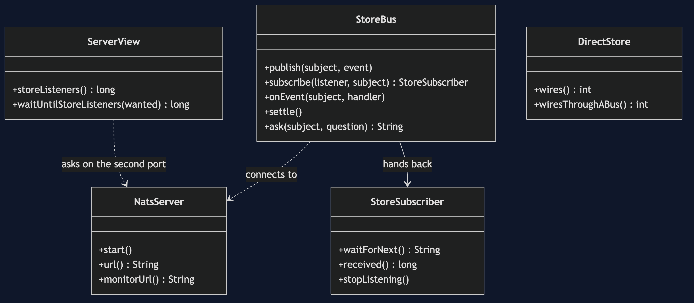
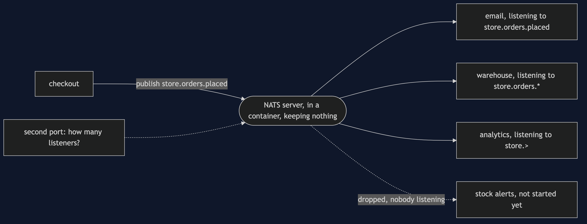
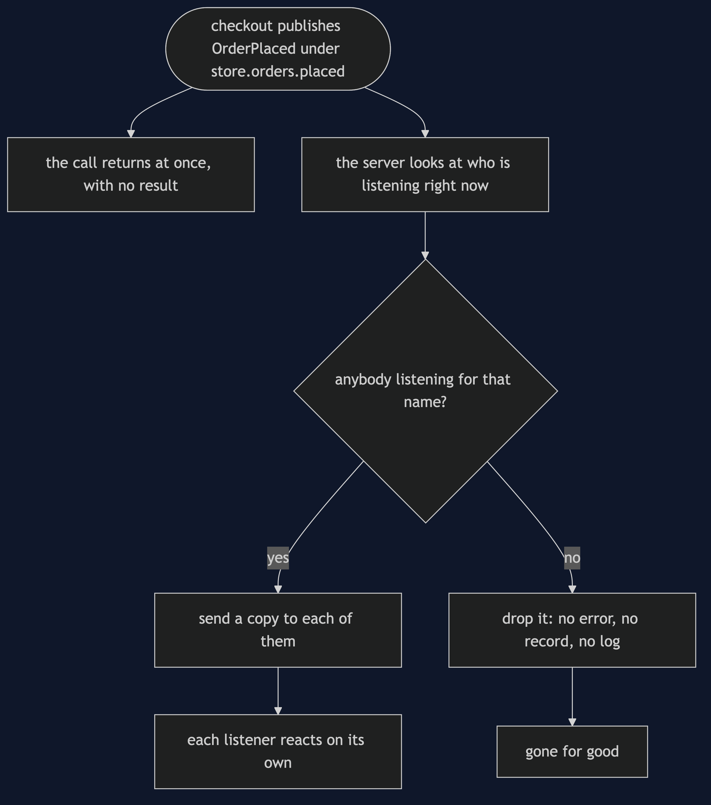
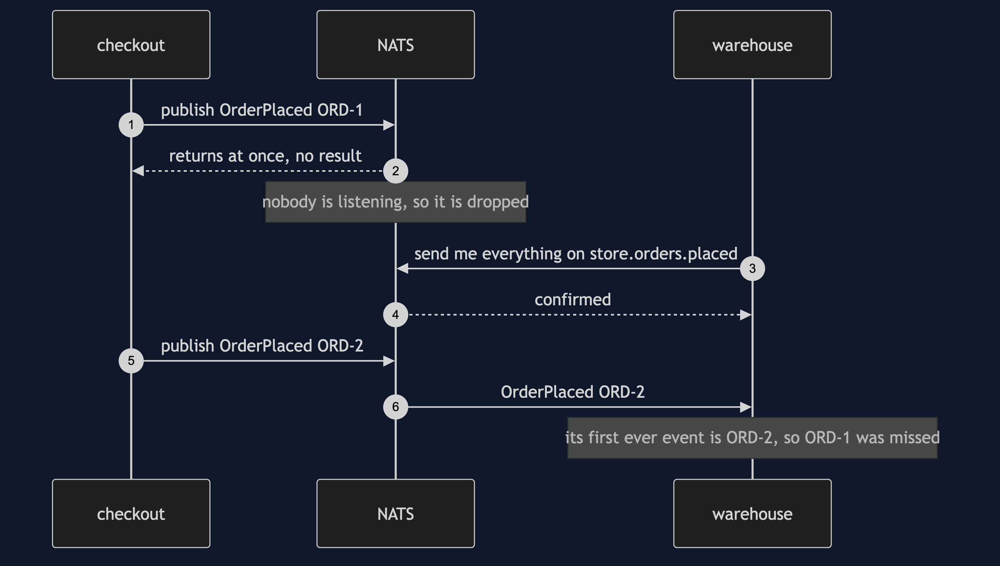
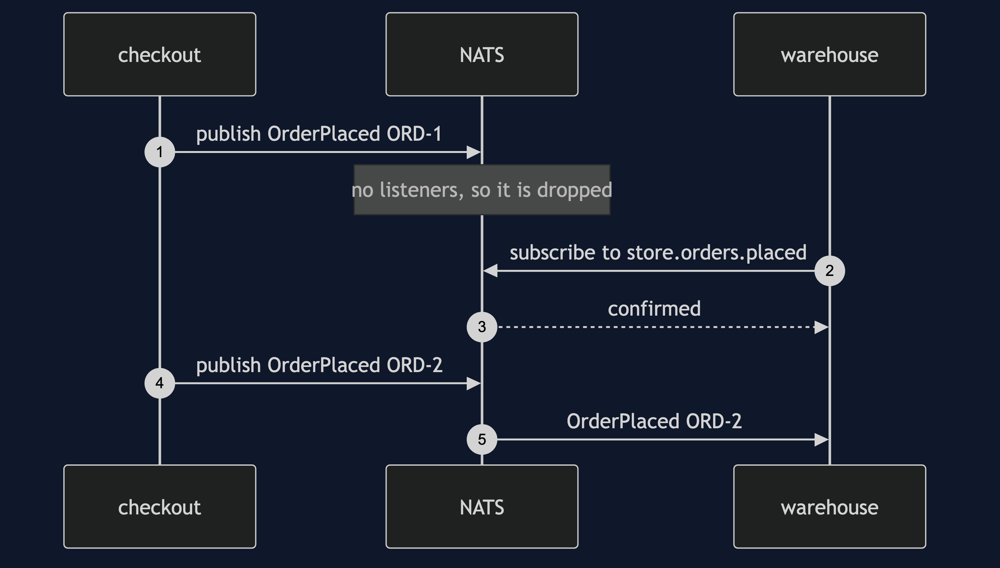
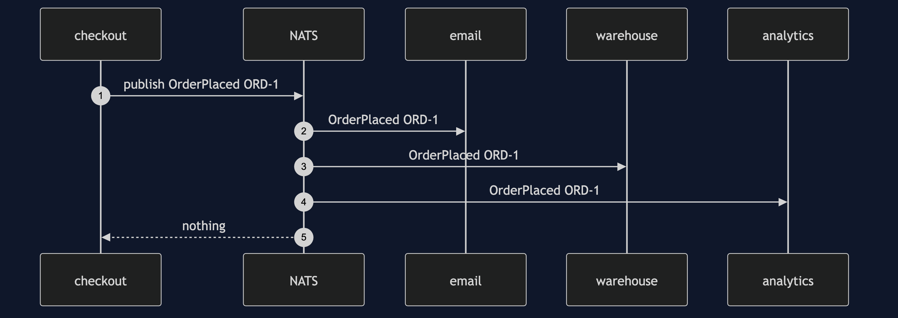
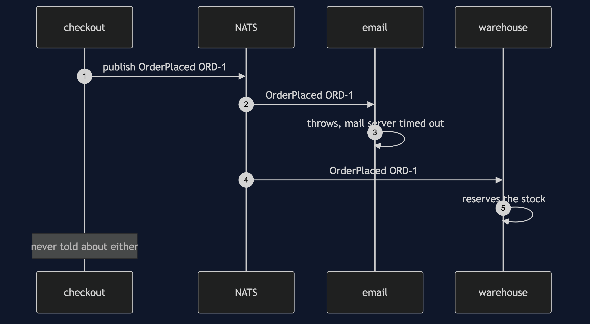
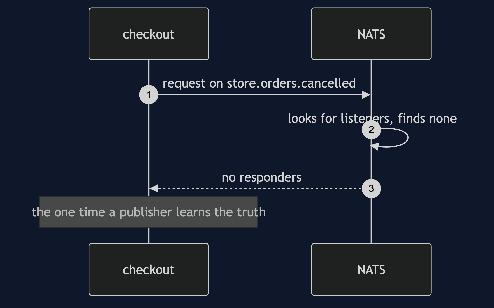

Event Bus with NATS Pattern
src/main/java/com/jk/explore/eventbusnats/
├── EventBusNatsDemo.java the six acts
├── NatsServer.java runs the NATS container, and stops it
├── StoreBus.java one service's link to the bus: publish, subscribe, ask
├── StoreSubscriber.java one listener, with a deadline on every wait
├── ServerView.java asks the server how many listeners it is holding
│
└── DirectStore.java the version with no bus, and its wiring costThe bus is now a program of its own, and it keeps nothing: an event goes to whoever is listening at that instant, and to nobody else, ever.
This project pairs with Event Bus, which builds the same idea by hand inside one program. That project teaches the pattern. This one shows what changes when the meeting place is a real server on the network, and what that server makes you deal with.
You will need a container runtime
This demo starts a NATS server in a container and stops it again. Without Docker Desktop, Colima or an equivalent running, the demo prints one sentence saying so and stops, and the tests are skipped.
Run
./gradlew runSix acts. Every number quoted below comes from this program's own output.
ONE. Everyone knows everyone.
5 services that each tell the other four when an order is placed: 20 wires between them, and every wire is an address that can be wrong or down.
add a sixth service and it needs 10 more.
TWO. Everyone knows the bus.
checkout published OrderPlaced ORD-1 under the name store.orders.placed and returned. it was told nothing about who was listening.
[email saw OrderPlaced ORD-1, warehouse saw OrderPlaced ORD-1, analytics saw OrderPlaced ORD-1].
5 services, each with 1 connection to the bus: 5 wires, not 20.
THREE. By name.
checkout published four events: an order placed, that order cancelled, a payment taken, and stock running low.
a listener for store.orders.placed received 1: [OrderPlaced ORD-1].
a listener for store.orders.*, where the star stands for one word, received 2: [OrderPlaced ORD-1, OrderCancelled ORD-1].
a listener for store.>, where the arrow stands for the rest of the name, received 4: [OrderPlaced ORD-1, OrderCancelled ORD-1, PaymentTaken ORD-1, StockLow SKU-42].
FOUR. One failing subscriber.
email's handler threw. recorded: [OrderPlaced ORD-1: mail server timed out].
the warehouse, on a connection of its own, still reacted: [warehouse reserved ORD-1].
checkout was never told. publishing had already returned before either of them ran.
FIVE. An event nobody hears.
nobody was listening. checkout published OrderPlaced ORD-1 and the bus dropped it: no error, no record, and nowhere to read it back from.
the warehouse then started listening, and checkout published OrderPlaced ORD-2.
the first event the warehouse ever received was OrderPlaced ORD-2. this bus delivers a name in order, so ORD-1 was never coming.
2 orders published, 1 received.
telling this bus is never confirmed. asking is: a request on store.orders.cancelled with nobody listening came back at once with no responders.
SIX. The bill.
who reacts to an order being placed? nothing in checkout says, and checkout cannot find out. only the server knows, and it has to be asked on a second port: 3 listeners for store events.
analytics stopped listening but left its connection open: 2 listeners.
after the three services closed their connections: 0 listeners. a connection closing takes every listener on it with it.
and the bus is now a program of its own to run and to watch: this demo needed 1 container.
and it keeps nothing. a subscriber that is down when an event is published has missed it for good.What the simulation got right, and what it left out
Event Bus is a real teacher, not a draft. Reading it first is still the right order.
What it got right. The shape is exactly the same. One meeting place. Publishers that hold no reference to a subscriber, and subscribers that hold no reference to a publisher. Five components needing five links rather than twenty. Subscribing by what the event is rather than by who sent it. One subscriber failing without taking the others down with it, and without the publisher hearing about it. And an honest closing act about the cost: a flow you cannot see by reading one class, and subscriptions that pile up if nobody cancels them.
What it left out. Five things, and every one of them is in this project.
- A miss is silent and permanent. The simulation noticed when an event had no listener and turned it into a dead event that something could watch for. A real fire-and-forget bus has no such hook. Publishing an order that nobody is listening for returns without error, and the order is gone. There is no log to read it back from.
- Listening takes effect at a moment in time. In one program, subscribing is a list insertion and is instant. Across a network, asking the server to start sending you events is a message that has to arrive. Publish a moment too early and the event is lost. This project waits for the server to confirm before it publishes, which is a real round trip and not a pause.
- Nobody can be asked how many listeners there are — except the server. The simulation's bus object could be asked directly. Here the publishing service genuinely cannot know, and the count has to be fetched from the server over a second port that exists for that.
- Tidying up is different. The simulation leaked subscriptions until each one was cancelled. Here a listener also disappears when the connection carrying it closes, so closing one connection takes every listener on it at once.
- Delivery is at most once, not exactly once. A slow or absent subscriber is a subscriber that misses events. The simulation could not produce that, because a method call cannot be missed.
The other half of the contrast: Kafka
The opposite trade is worth seeing next to this one. Event-Driven Architecture with Kafka runs a real broker that keeps a durable log. There, a service that is down comes back and reads everything it missed, and a brand new service can be built from history. Its price is that the broker stores events, remembers how far every reader has got, and can deliver the same event twice, so every reader has to be safe to repeat.
NATS makes the other choice. Nothing is stored, nothing is remembered, nobody is tracked, and delivery is at most once. It is fast and small, and a missed event is a missed event. Neither choice is the right one in general: they answer different questions, and knowing which question you are answering is the point of reading both.
Test
./gradlew test2 test classes, 8 test methods, against a real NATS server in a container. There is no Thread.sleep anywhere in the tests. Every wait has a deadline and fails the test rather than hanging it.
The awkward one is proving that a listener missed an event, because that is proving a negative. It is done by proving a positive instead. The listener starts, a second order is published, and the very first event it ever receives is that second order. NATS delivers one name in the order it was published, so the first order cannot still be on its way. It was never coming.
Technologies and versions
| What | Version | Why it is here |
|---|---|---|
| Java | 21 | The repository standard, via the Gradle toolchain block |
| Gradle | 9.2.1 | The wrapper in this directory; no separate install needed |
| Docker | 24 or later, running | Runs the bus |
| NATS server | nats:2.15.0-alpine | The bus itself, in a container |
io.nats:jnats | 2.26.3 | The official NATS client for Java |
| Testcontainers | 2.0.5 | Starts and stops the container from the demo itself |
| slf4j-simple | 2.0.16 | The libraries' logging, turned down so the acts stand alone |
| JUnit 5 | 5.10.2 | Test runner; every test is skipped when no container runtime is present |
See docs/dependencies.md.
Learning Material
| Document | What it covers |
|---|---|
docs/problem-statement.md | The partner's bus, and what is new |
docs/event-bus-with-nats-pattern-explained.md | The pattern, and six acts |
docs/class-diagram.md | The types |
docs/architecture-diagram.md | The parts and how they connect |
docs/data-flow-diagram.md | What happens to one published event |
docs/sequence-diagram.md | Written for a listener with the screen off |
docs/uml-diagram.md | Four sequences |
docs/animation.html | The six acts in a browser |
docs/prerequisites.md | What you need to know, and to have running |
docs/dependencies.md | What NATS is, what it costs, and that skipping this project loses none of the pattern |
docs/session.md | A one-hour taught session |
docs/spec.md | The generated specification |
docs/youtube.md | Title, description and chapters |
The pattern in one picture

Where each piece sits

How one published event moves

Who calls whom, in order

All four sequences




Video
Built from video/scenes.py by video/build_video.sh. The rendered file is not committed; see the repository README for why.
Where you have already met this
NATS itself, in service meshes and in control planes. Also Redis Pub/Sub, MQTT at quality of service zero, and a browser's WebSocket fan-out. All of them make the same trade: fast, small, and forgetful.
When this is too much
For two components in one program that always talk to each other, a direct call is clearer, and the hand-built Event Bus is clearer still. Reach for a server only when the parties are separate programs. If losing an event would cost a customer money, this is the wrong bus: you want the durable log.
Where this sits
This project pairs with Event Bus, and is the real-infrastructure version in messaging-integration-patterns.